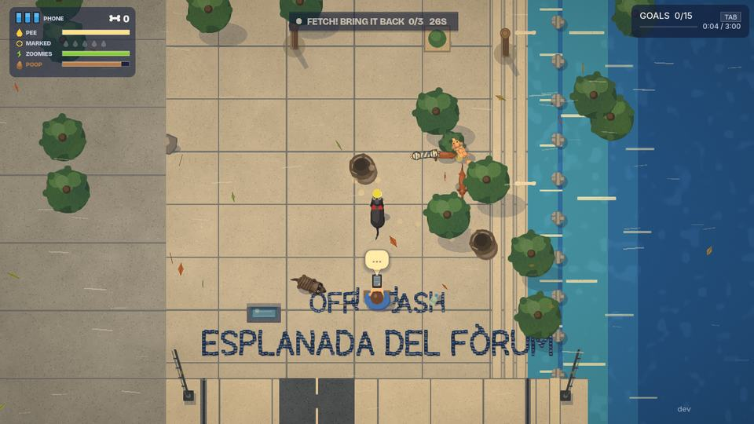

El Fòrum
The solar pergola by the sea
Where Avinguda Diagonal meets the Mediterranean edge: an immense coastal esplanade of pale concrete, low sea winds, skate rails and the monumental blue photovoltaic canopy tilting out over the water toward the marina.
- Off-leash stop
- ESPLANADA DEL FÒRUM (Fenced dog yard)
- Beat the clock
- Under 3:00
Screenshots



Goals (15)
- Mark 5 spots
- Have 4 good long sniffs
- Get the phone home without a scratch
- Get yourself home without a bump
- Get your business bagged
- Bring the ball back 3 times
- Scarf down 2 dropped snacks
- Dodge the esplanade skater, or cheer him on
- Sprint under the pergola 3 times
- Grind skate rails for 6 style points
- Land an x3 trick combo
- Snatch the solar trophy off the marina podium
- Spell LEASH
- Find the hidden pernil
- Beat the clock (under 3:00)